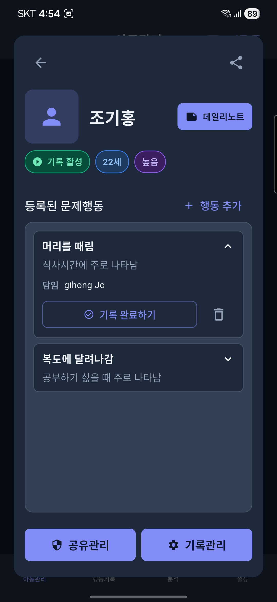
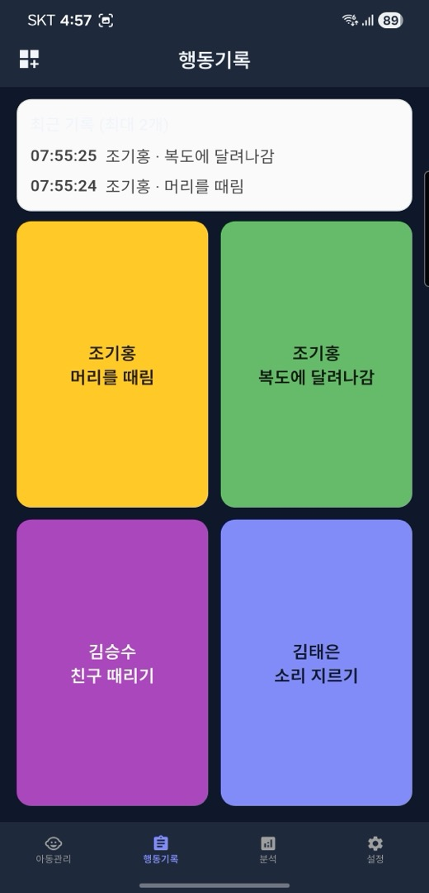
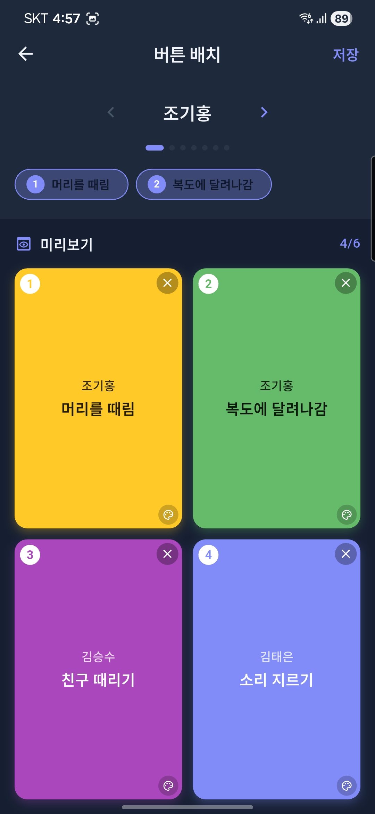
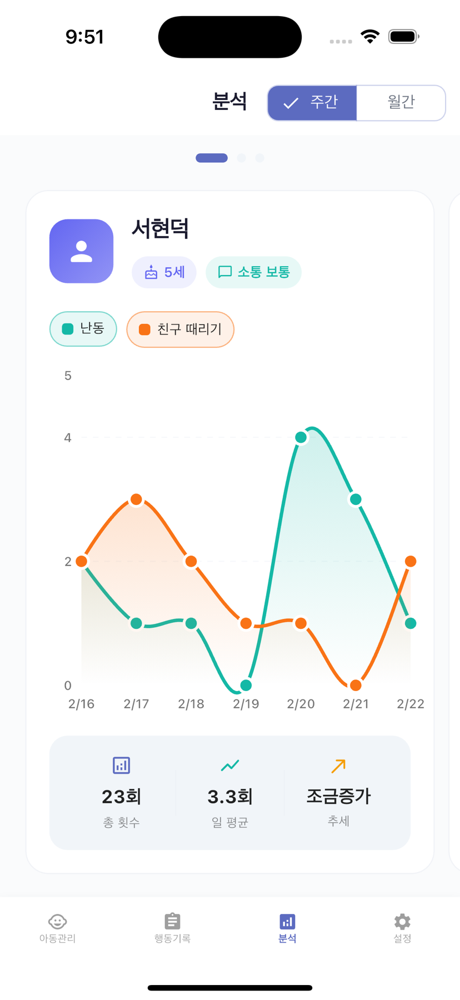
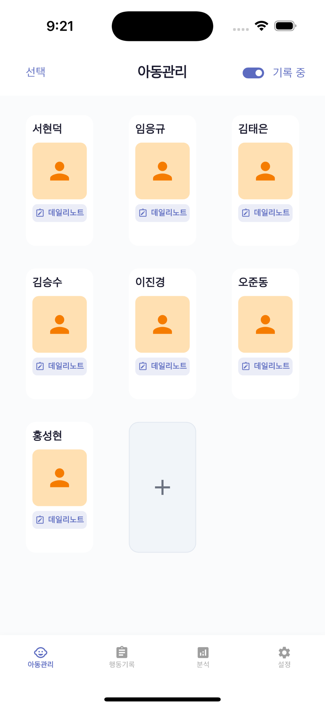
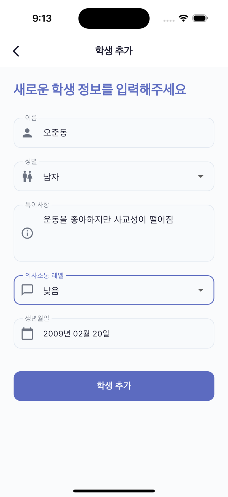

특수교육과 행동치료 현장에서 학생 행동 데이터가
체계적으로 수집되지 않아 분석이 어렵다는 문제에서 시작했습니다.
수업 중 발생하는 문제행동을 즉각 기록하고, 일과 중 패턴을 파악해 개별화 교육 계획(IEP)에 반영합니다.
응용행동분석(ABA) 세팅에서 행동의 선행사건·행동·후속결과를 체계적으로 수집하고 중재 효과를 수치로 확인합니다.
담당 교사와 같은 학생을 동시에 관찰하며 기록합니다. 실시간 동기화로 팀 전체가 같은 데이터를 공유합니다.

학생 프로필에 문제행동 목록을 등록해두면 기록할 때마다 자동으로 누적됩니다. 담당 선생님이 지정되어 있어 누가 언제 어떤 행동을 기록했는지 투명하게 확인할 수 있습니다.
특수학급이나 치료실에서는 여러 선생님이 같은 학생을 동시에 관찰합니다. 한 명이 기록하면 나머지 선생님 화면에도 즉시 반영되어 중복 기록 없이 팀 전체가 정확한 데이터를 공유합니다.


기록 버튼은 학생마다 다르게 구성할 수 있습니다. 수업 중 행동이 발생하는 즉시 해당 버튼을 탭하면 기록 완료. 컬러 코딩으로 빠르게 구분하고, 배치는 미리보기로 확인합니다.
매일 기록한 행동이 주간·월간 차트로 시각화됩니다. 어떤 행동이 언제 가장 많이 발생하는지, 중재 이후 빈도가 줄고 있는지 수치로 확인할 수 있습니다.

응용행동분석(ABA)의 핵심인 ABC 모델을 기반으로 합니다. 행동을 단순히 기록하는 것을 넘어, 왜 발생하는지를 파악합니다.
행동이 발생하기 전 상황. 어떤 환경·자극이 행동을 유발했는지 기록합니다.
관찰 가능하고 측정 가능한 행동 자체. 빈도·강도·지속시간을 기록합니다.
행동 직후에 발생한 결과. 어떤 반응이 행동을 강화 또는 감소시키는지 파악합니다.
Will-Be의 데일리 노트는 ABC 구조를 기반으로 설계되어
기록이 곧 분석 데이터가 됩니다.


행동 발생 즉시 버튼 하나로 기록. 타임스탬프와 담당자가 자동으로 저장됩니다.
여러 선생님이 같은 학생을 동시에 관찰하며 기록해도 실시간으로 통합됩니다.
일별·주별 행동 빈도를 차트로 시각화해 중재 효과와 행동 변화 추세를 파악합니다.
매일의 관찰 내용을 ABC 구조로 기록합니다. 날짜별 히스토리가 자동으로 누적됩니다.
학생별로 자주 기록하는 행동을 버튼으로 등록해 수업 중 빠르게 기록합니다.
선생님·도우미 역할을 구분해 접근 권한을 관리합니다. 아동 정보를 안전하게 보호합니다.